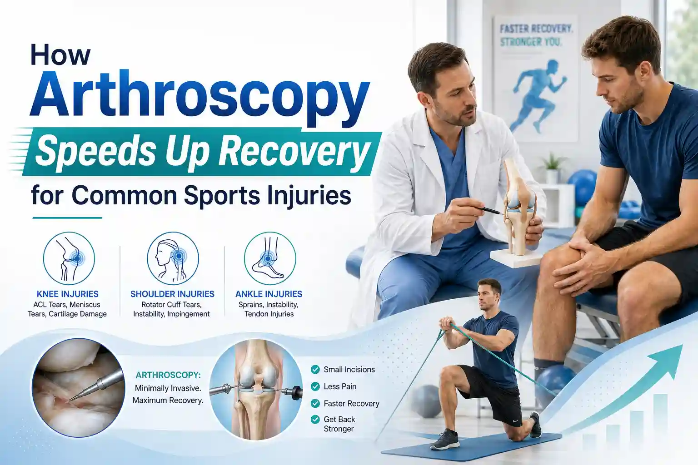
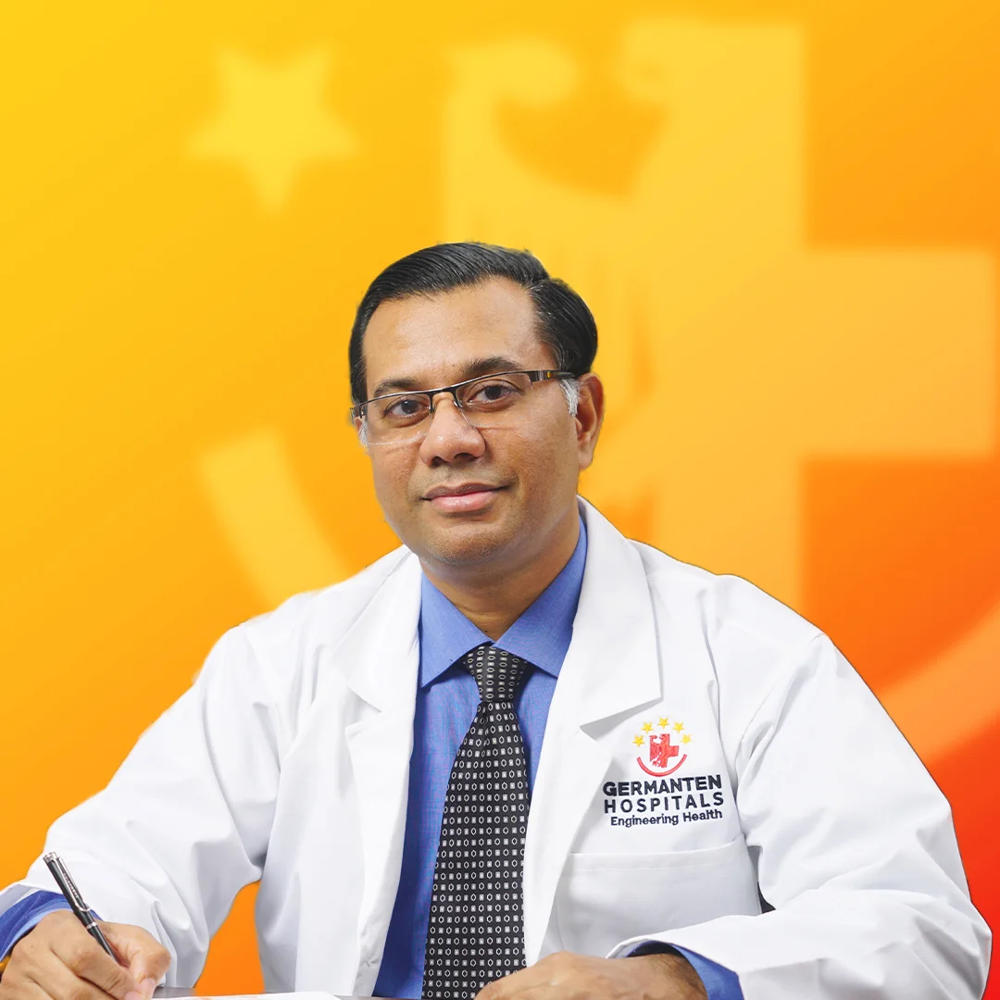

Medically Reviewed by
DR. MIR JAWAD ZAR KHANMBBS, MS - Orthopedic
M.CH-(Ortho) Joint
Replacement surgeon
How Arthroscopy Speeds Up Recovery for Common Sports Injuries
For an athlete or an active fitness enthusiast, there are few things more frustrating than being sidelined by an injury. Whether you tweaked your knee playing badminton in Gachibowli, felt a sharp pop in your shoulder during a cricket match, or rolled your ankle on a morning run, a sports injury doesn't just cause physical pain it disrupts your entire routine and mental well-being.
In the past, treating severe joint injuries often meant undergoing traditional open surgery. This required large incisions, significant muscle disruption, hospital stays, and agonizingly long rehabilitation periods. Athletes would often lose an entire season, sometimes even their careers to the recovery process alone.
Today, the landscape of sports medicine has been completely revolutionized by minimally invasive joint surgery, specifically a highly advanced procedure known as arthroscopy. If you are looking for the fastest recovery for sports injuries, arthroscopy is the gold standard.
But how exactly does this modern surgical technique work, and why does it drastically reduce your downtime? In this comprehensive guide, we will explore the science behind arthroscopy, the common sports injuries it treats, and why consulting the best sports injury doctor in Hyderabad is your best strategy for getting back in the game safely and swiftly.
What is Arthroscopy? (Minimally Invasive Joint Surgery Explained)
Arthroscopy, pronounced ahr-THROS-kuh-pee, is a surgical procedure that orthopedic surgeons use to visualize, diagnose, and treat problems inside a joint. The term literally means "to look within the joint."
Instead of making a large incision to open up the joint completely, the surgeon makes two or three tiny incisions, each about the size of a buttonhole, roughly a quarter of an inch.
- Through one of these small portals, the surgeon inserts an arthroscope. This is a narrow tube fitted with a high-definition, fiber-optic camera and a specialized lighting system.
- The camera broadcasts a magnified, 4K-resolution image of the inside of your joint directly onto a large monitor in the operating room.
- The surgeon then pumps a sterile saline fluid into the joint to expand it, providing a crystal-clear view of the cartilage, ligaments, and surrounding structures.
- If treatment is required, the surgeon inserts specialized, pencil-thin surgical instruments through the other tiny incisions to repair tears, remove loose bone fragments, or shave away damaged tissue.
Because the surgeon can see the internal structures in microscopic detail without cutting through major muscles, arthroscopy & sports injuries Hyderabad have become synonymous with precision care and rapid rehabilitation.
Common Sports Injuries Treated with Arthroscopy
Arthroscopy can be performed on almost any joint, but it is most frequently used on the complex hinge and ball-and-socket joints that take the heaviest beating during athletic activities.
1. Knee Injuries
The knee is the most commonly injured joint in sports. The forceful twisting, jumping, and sudden changes of direction required in sports like football, basketball, and tennis put immense strain on the knee's internal ligaments and shock absorbers. You will likely need to consult a knee arthroscopy surgeon Hyderabad for:
- Meniscus Tears: The meniscus is a C-shaped piece of tough, rubbery cartilage that acts as a shock absorber between your shinbone and thighbone. Arthroscopy is perfectly suited for trimming away torn meniscus flaps or repairing them with tiny sutures.
- ACL Tears: The Anterior Cruciate Ligament (ACL) stabilizes the knee. A torn ACL cannot simply be stitched back together; it must be reconstructed. Surgeons use arthroscopy to seamlessly remove the torn ligament and graft a new one into place with pinpoint accuracy.
- Chondromalacia (Runner’s Knee): Smoothing out damaged, frayed articular cartilage behind the kneecap to reduce painful friction.
2. Shoulder Injuries
The shoulder provides an incredible range of motion, which unfortunately makes it highly susceptible to instability and soft tissue damage, especially in overhead sports like swimming, tennis, and weightlifting. If you are searching for a shoulder arthroscopy specialist near me, they typically treat:
- Rotator Cuff Tears: Repairing the group of four muscles and tendons that stabilize the shoulder joint and allow you to lift your arm.
- Labral Tears (SLAP Tears): Reattaching the rim of cartilage, the labrum, that lines the shoulder socket, often injured during repetitive throwing motions or sudden shoulder dislocations.
- Shoulder Impingement: Shaving away inflamed tissue or bone spurs that are painfully pinching the rotator cuff tendons when the arm is raised.
3. Ankle Injuries
Ankle sprains are common, but when the pain lingers for months, it usually points to internal joint damage. Arthroscopy is used to clear out scar tissue, remove loose cartilage fragments, and address osteochondral defects, which means damage to the bone and cartilage caused by severe ankle twists.
5 Ways Arthroscopy Speeds Up Your Recovery
If your goal is achieving the fastest recovery for sports injuries, understanding why arthroscopy is superior to traditional open surgery is vital. Here are the five biomechanical and clinical reasons this minimally invasive technique gets you back to your active lifestyle faster.
1. Minimal Soft Tissue Trauma
In traditional open surgery, a surgeon must cut through skin, fascia, healthy muscle tissue, and the joint capsule to reach the problem area. This collateral damage often takes longer to heal than the actual joint repair itself. Because arthroscopy utilizes tiny keyhole incisions, the surrounding muscles and ligaments are gently bypassed rather than severed. With the structural integrity of your muscles intact, your body expends far less energy repairing collateral damage.
2. Drastically Reduced Post-Operative Pain
Pain is a primary limiting factor in rehabilitation. If you are in severe agony, you cannot participate effectively in physical therapy. Because arthroscopic incisions are so small and muscle trauma is minimized, patients experience significantly lower post-operative pain scores. This means you will require fewer heavy pain medications and can begin moving the joint much sooner without debilitating discomfort.
3. Accelerated Return to Range of Motion
One of the biggest hurdles after joint surgery is stiffness and the buildup of scar tissue, also known as arthrofibrosis. Large incisions inherently create large amounts of scar tissue, which can bind the joint and restrict movement. The micro-incisions used in arthroscopy produce very little scar tissue. As a result, patients can often begin gentle range-of-motion exercises within a few days of surgery, preventing the joint from freezing up.
4. Lower Risk of Infection and Complications
Every time a joint is opened to the air, there is a risk of infection. Because arthroscopic incisions are tiny and the joint is continuously flushed with sterile saline fluid throughout the procedure, the infection rate for arthroscopy is exceptionally low, typically less than 1%. Fewer complications mean no unexpected setbacks in your recovery timeline.
5. It is an Outpatient Procedure
You do not have to spend days recovering in a hospital bed. Because the trauma to your body is so minimal, the vast majority of arthroscopic surgeries are performed on an outpatient basis. This means you can have the surgery in the morning and be recovering comfortably in your own bed by the afternoon.
The Typical Arthroscopy Recovery Timeline
While arthroscopy drastically accelerates healing, it is still surgery, and respecting the biological healing process is crucial. If you try to rush back to the field before the internal repairs are fully anchored, you risk re-injury.
Here is a general timeline of what to expect when you partner with a sports injury doctor near me:
- Days 1 to 3: You will likely need crutches for a knee or ankle procedure, or a sling for a shoulder procedure. Focus on the R.I.C.E protocol, which includes Rest, Ice, Compression, and Elevation, to manage the mild swelling.
- Weeks 1 to 2: The tiny incisions will close and heal. You will begin early physical therapy to activate the surrounding muscles and restore a basic range of motion.
- Weeks 3 to 6: You will gradually discard your crutches or sling. Therapy will shift to strengthening the joint. For minor procedures like a meniscus trim, you may be cleared for light jogging or gym work.
- Months 3 to 6 (For Complex Reconstructions): If you underwent a major repair like an ACL reconstruction or rotator cuff repair, this phase focuses on sports-specific agility drills, plyometrics, and rebuilding your explosive power before a full return to competitive sports.
Why Choose the Best Sports Injury Doctor in Hyderabad?
Arthroscopy is a highly technical, instrument-heavy procedure. It requires an incredibly skilled surgeon who possesses excellent hand-eye coordination to operate complex tools while watching a 2D monitor.
When you trust your care to the best sports injury doctor in Hyderabad, you benefit from:
- Diagnostic Precision: Elite sports specialists do not just treat the symptom; they identify the exact biomechanical flaw that caused the injury in the first place.
- Advanced Technology: Top-tier orthopedic centers in Hyderabad are equipped with the latest high-definition 4K arthroscopic towers and specialized radiofrequency wands that provide cleaner, faster repairs.
- Sports-Specific Rehabilitation: The best doctors work hand-in-hand with specialized sports physiotherapists. They do not just give you generic exercises; they design a rehabilitation protocol tailored to the exact demands of your specific sport, ensuring you return stronger and more resilient than before.
Conclusion
A sports injury shouldn't mean the end of your active lifestyle, nor should it subject you to months of debilitating post-surgical pain. With the advent of arthroscopy, the medical field has drastically shifted the odds back in favor of the athlete. By choosing minimally invasive joint surgery, you are opting for less pain, smaller scars, and the fastest, safest route back to the activities you love.
Do not let an undiagnosed joint issue keep you permanently on the bench. Listen to your body, seek out precise diagnostics, and embrace the modern medical techniques designed to keep you moving forward.
Reclaim Your Active Lifestyle Today!
Why suffer in silence when advanced orthopedic care is near you? Connect with us if you are facing stiffness, swelling, or sports injuries in Hyderabad, and partner with the best sports injury doctor in Hyderabad for world-class, minimally invasive care.
Dial +91 998 963 5555 to book your expert consultation now and take your first step toward the fastest recovery possible!
Frequently Asked Questions (FAQs)
1. Is arthroscopy safe for older adults, or is it just for young athletes?
Arthroscopy is very safe and highly effective for patients of all ages. While it is heavily utilized in sports medicine, it is also frequently used to treat degenerative meniscal tears, remove loose bodies, and address early-stage arthritis in older, active adults.
2. Will I need general anesthesia for an arthroscopy?
It depends on the specific joint and the extent of the repair. Some procedures can be done under regional anesthesia, where only the limb is numbed, such as a spinal block for the knee, or local anesthesia with sedation, while more complex shoulder arthroscopies typically require general anesthesia.
3. Are there any permanent scars after minimally invasive joint surgery?
The scars from arthroscopy are incredibly small. Most patients are left with two or three tiny marks, often no larger than a freckle or a small scratch, which tend to fade significantly over time.
4. How soon can I walk after a knee arthroscopy?
For minor procedures like a partial meniscectomy, which means trimming a torn meniscus, many patients can walk and bear weight on the leg the very same day. If a major ligament was reconstructed or cartilage was repaired, you may need to use crutches for a few weeks to protect the repair while it heals.
5. How do I know if I need arthroscopy or open surgery?
The vast majority of sports injuries can now be treated arthroscopically. However, severe traumatic fractures or massive, complex joint reconstructions may still require an open approach. Your orthopedic specialist will review your MRI and advise you on the safest, most effective surgical route.


DR. MIR JAWAD ZAR KHAN
MBBS, MS - Orthopedic, M.CH-(Ortho) Joint Replacement Surgeon
As the visionary Chairman and Managing Director of Germanten Hospitals, Hyderabad, Dr. Mir Jawad Zar Khan brings over two decades of surgical leadership to the field. He is dedicated to transforming lives through evidence-based treatments, advanced robotic technology, and a commitment to patient quality of life.